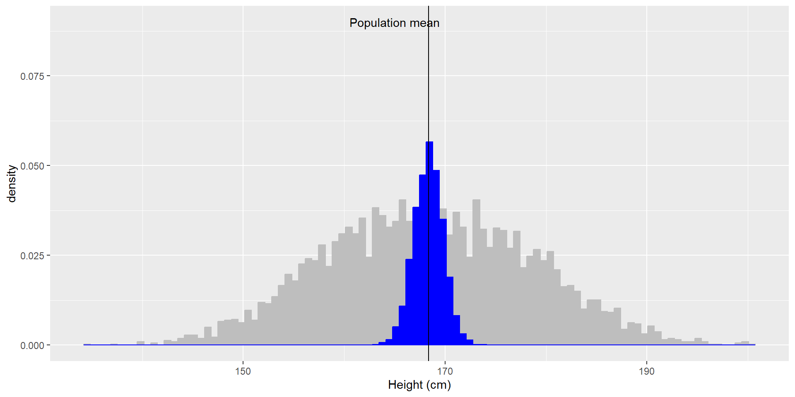
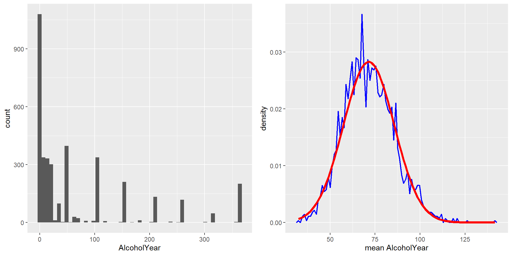
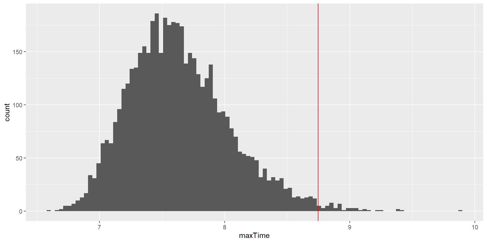
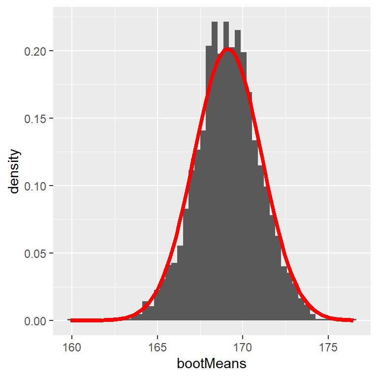

| sampleMean | sampleSD |
|---|---|
| 169.056 | 9.785374 |
| 166.598 | 11.198606 |
| 166.862 | 11.626305 |
| 166.712 | 11.012750 |
| 168.786 | 10.796447 |
06 Sampling and Resampling/Simulations
Julius-Maximilians-University Würzburg
Course: “Biostatistics”
Translational Neuroscience
Course: “Biostatistics”
Translational Neuroscience
Dr. Lea Hildebrandt
Sampling
We have already mentioned the difference between the whole population and our sample. To be able to draw inferences from a relatively small sample to a population is one of the core ideas of statistics.
Why do we sample?
Time: It’s often impossible to measure whole population.
A subset (sample) might be sufficient to estimate a value of interest (diminishing marginal returns).
How Do We Sample?
The sample needs to be representative of the entire population, that’s why it’s critical how we select the individuals.
Think about examples of non-representative samples!
Representative: Every member of the population has an equal chance of being selected.
If non-representative: sample statistic is biased, its value is (systematically) different from the true population value (parameter).
(But talking about bias is mostly a theoretical discussion: Usually we of course don’t know the population parameter and thus cannot compare our estimate with it! Otherwise we wouldn’t need to sample.)
Different Ways of Sampling
without replacement: Once a member of the population is sampled, they are not eligible to be sampled again. This is the most common variant of sampling.
with replacement: After a member of the population has been sampled, they are put back into the pool and could potentially be sampled again. This usually happens out of accident or by necessity (cf. Bootstrapping)
Sampling Error
It is likely that our sample statistic differs slightly from the population parameter. This is called the sampling error.
If we collect multiple samples, the sample statistic will always differ slightly. If we combine all those sample statistics, we can approximate the sampling distribution.
Of course, we want to minimize the sampling error and get a good estimate of the population parameter!
Example Sampling Distribution
Let’s use the NHANES dataset again and let’s assume it is the entire population. We can calculate the mean (\(\mu = 168.35\)) and standard deviation (\(\sigma = 10.16\)) as the population parameters. If we repeatedly sample 50 individuals, we get this:

The sample means and SDs are similar, but not exactly equal to the population parameters.
If we sample 5000 times (50 individuals each), we can see that the average of these 5000 sample means (depicted in blue) is similar to the population mean!
Average sample mean across 5000 sample: \(\hat{X} = 168.3463\).
Standard Error of the Mean
In the example on the last slide, the means were all pretty close to each other, i.e. the blue distribution was very narrow and the variance small (compared to the grey distribution). This is an inherent statistical property of sample means: By averaging several individual values, thus aggregating them into a sample (here with \(n = 50\)), we reduce the variability of the sampling distribution.
We can quantify this variability of the sample mean with the standard error of the mean (SEM).
\[SEM = \frac{\hat{\sigma}}{\sqrt{n}}\]
This formula needs two values: the population variability \(\sigma\) (or sample SD \(\hat{\sigma}\) as approximation) and the size of our sample \(n\).
We can only control our sample size, thus if we want a better estimate, we can increase sample size!
A sample of \(n = 50\) already decreases the population variability by a factor of \(\sqrt{50} = 7.1\) !
The Central Limit Theorem
The Central Limit Theorem (CLT) is a fundamental (and often misunderstood) concept of statistics.
CLT: With larger sample sizes, the sampling distribution of sample means (i.e., the blue distribution from before) will become more and more normally distributed*, even if the population distribution is not (i.e., the grey distribution from before)!

Normal Distribution of Height
Note: Means approximate a normal distribution, irrespective of the distribution from which the data stem. This is because the sampling error between the sampling mean \(\hat{\mu}\) and the population mean \(\mu\) follows a normal distribution.
CLT in Action
On the left you can see a highly skewed distribution of alcohol consumption per year (from the NHANES dataset). If we repeatedly draw samples of size 50 from the datset and take the mean, we get the right distribution of sample means - which looks a lot more “normal” (normal distribution is added in red)!
The CLT is important because it allows us to safely assume that the sampling distribution of the mean will be normal in most cases, which is a necessary prerequisite for many statistical techniques.
Resampling and Simulation
Simulations
As you saw in last lecture, we can also use similar functions (usually starting with r) to simulate data (i.e., to draw samples from probability distributions).
This can be helpful if we don’t know the “ground truth” or want to quantify uncertainty. We can also use simulations to calculate the power of a study.
With simulations, we define the expected “ground truth” (distribution of the population) and generate data from it.
Example: We can use rnorm() to simulate data from a normal distribution with given parameters. Here, we will use means and SDs from the Scottish Health Survey (2008) to visualize two normal distributions:
men <- rnorm(n = 100000, mean = 176.2, sd = 6.748)
women <- rnorm(n = 100000, mean = 163.8, sd = 6.931)
heights <- tibble(men, women) %>%
pivot_longer(names_to = "sex", values_to = "height", men:women)
heights %>%
ggplot(aes(x = height, fill = sex)) +
geom_density(alpha = .6) +
scale_fill_viridis_d(option = "E") +
theme_minimal()We could use these data to visualize how much overlap there is between the two distributions of men and women, or to test how big the difference in height needs to be to become significant etc.
We use “real data” as input for the simulations! So the simulations are based on empirical values (means, sd), but we actually draw more observations, 100.000!
Simulate Different Distributions
It is possible to draw data from different distributions:
nsamples <- 10000
nhistbins <- 100
# uniform distribution
p1 <- tibble(x = runif(nsamples)) %>%
ggplot((aes(x))) +
geom_histogram(bins = nhistbins) +
labs(title = "Uniform")
# binomial distribution
p2 <- tibble(x = rbinom(nsamples, 20, 0.25)) %>%
ggplot(aes(x)) +
geom_histogram(bins = nhistbins) +
labs(title = "Binomial (p=0.25, 20 trials)")
# normal distribution
p3 <- tibble(x = rnorm(nsamples)) %>%
ggplot(aes(x)) +
geom_histogram(bins = nhistbins) +
labs(title = "Normal")
# Chi-squared distribution
p4 <- tibble(x = rchisq(nsamples, df=1)) %>%
ggplot(aes(x)) +
geom_histogram(bins = nhistbins) +
labs(title = "Chi-squared")
cowplot::plot_grid(p1, p2, p3, p4, ncol = 1)Simulate a Fake Dataset
Let’s simulate data of 120 participants of different heights and genders flipping a coin. To do so, we need to know how to simulate a) heights, b) flip a coin, and c) assign genders.
Simulate coin flips:
(Instead of drawing from a probability distribution function that starts with an r, e.g. rnorm(), we use sample(), which randomly (uniformly) draws from values you determine. We need to set replace=TRUE)
We could of course use similar code to simulate gender or the like.
But if we want to predetermine which genders we want to collect data from (i.e. same number in each gender group), we can also use the function rep(). This function will simply repeat an observation for a number of rows:
Determine participant numbers and combining everything into one dataframe:
sim_data <- tibble(
participant_number = 1:120,
gender = rep(x = c("man", "woman", "nonbinary"), each = 40),
height = rnorm(120, mean = 170, sd = 10),
coin_flip = sample(c("Head", "Tail"), 120, replace=TRUE) )
# or if you have run all the code before, you could also use the objects you have already in your Environment:
# sim_data <- tibble(participant_number = 1:120, genders, heights, coin_flips)If we wanted to do a Monte Carlo Simulation, we could use the code from the last slide and put the simulation into a for loop. Inside the for loop, we would also calculate some value of interest (one estimate per subsample, such as the mean).
Monte Carlo Simulation
With the increasing use of computers, simulations have become an essential part of modern statistics. Monte Carlo simulations are the most common ones in statistics.
There are four steps to performing a Monte Carlo simulation:
Define a domain of possible values.
Generate random numbers within that domain from a probability distribution.
Perform a computation using the random numbers.
Combine the results across many repetitions.
Randomness in Statistics
Random = unpredictable.
For a Monte Carlo simulation, we need pseudo-random* numbers, which are generated by a computer algorithm.
We can simply generate (pseudo-)random numbers from different distributions with R, e.g. with rnorm() to draw (pseudo-)random numbers from a normal distribution:
Each time, we generate random numbers, these will differ slightly.
But we can also generate the exact same set of random numbers (which will be helpful to reproduce results!) by setting the random seed to a specific value such as 123: set.seed(123).
Using Monte Carlo Simulations
Example: Let’s try to find out how much time we should allow for a short in-class quiz.
We pretend to know the distribution of completion times is normal, with mean = 5 min and SD = 1 min.
How long does the test period need to be so that we can expect ALL students (n = 150) to finish in 99% of the quizzes?
To answer this question, we need the distribution of the longest finishing time.
What we will do is to simulate finishing times for a great number of quizzes and take the maximum of each (the longest finishing time). We can then look at the distribution of maximum finishing times and see where the 99% quantile is.
This value is the amount of time that we should allow - given our assumptions!!
Using Monte Carlo Simulations 2
Let’s repeat the steps of the simulation by going through the four steps mentioned before:
- Define a domain of possible values.
–> Our assumptions: The values would come from a normal distribution with \(n = 150\), \(mean = 5\), and \(SD = 1\).
- Generate random numbers within that domain from a probability distribution.
Using Monte Carlo Simulations 3
- Combine the results across many repetitions.
nrep <- 5000 #number of repetitions
# initialize an empty matrix to fill in the max values later
max_rand_num <- matrix(data = NA, nrow = nrep, ncol=1)
# use a for-loop to repeat resampling nrep times!
for (i in 1:nrep) {
rand_num <- rnorm(n = 150, mean = 5, sd = 1)
max_rand_num[i, 1] <- max(rand_num)
}
# get the cutoff (99%) of the distribution of max values
cutoff <- quantile(max_rand_num, 0.99)
print(cutoff) 99%
8.866392 Using Monte Carlo Simulations 4
This shows that the 99th percentile of the finishing time distribution falls at 8.768088 minutes, meaning that if we were to give that much time for the quiz, then we expect that in 99% of quizzes, every student would finish.
Resampling: The Bootstrap
We can use simulations to demonstrate statistical principles (like we just did) but also to answer statistical questions.
The bootstrap is a simulation technique that allows us to quantify our uncertainty of estimates!
- We repeatedly sample with replacement from an actual dataset.
- We compute a statistic of interest for each sample.
- We get the distribution of those statistics and use it as our sampling distribution.
Bootstrap Example
Let’s use the bootstrap to estimate the sampling distribution of the mean heights of the NHANES dataset. We can then compare the result to the SEM (=uncertainty of the mean) that we discussed earlier.
# perform the bootstrap to compute SEM and compare to parametric method
nRuns <- 2500
sampleSize <- 32
heightSample <-
NHANES_adult %>%
sample_n(sampleSize) # draw 32 observations
# function to bootstrap (sample w/ replacement) & get mean
bootMeanHeight <- function(df) {
bootSample <- sample_n(df, dim(df)[1], replace = TRUE)
return(mean(bootSample$Height))
}
# run function 2500x
bootMeans <- replicate(nRuns, bootMeanHeight(heightSample))
# calculate "normal" SEM and bootstrap SEM
SEM_standard <- sd(heightSample$Height) / sqrt(sampleSize)
SEM_bootstrap <- sd(bootMeans)
SEM_standard[1] 1.564454[1] 1.542479
Evaluation: Bootstrapping
Con
Takes very long to compute (compared to the SEM)
Precision depends on computing time
Pro
No assumption about sampling distribution necessary
Is a good solution if you do not want to rely on certain assumptions
Bootstrapping is a so-called model-free procedure: You put in just the data and get a result that does not depend on any further assumptions.
Model-based procedures (like most statistical tests we will cover in this class) are usually more precise if their assumptions are met. Unfortunately, assumptions are not always straightforward to check.
Resampling
Let’s look at the Bootstrap. Remember that we usually use real data for bootstrapping and draw samples with replacement of the same size as the original dataset. We can use this to quantify uncertainty, such as with the Standard Error of the Mean (SEM) or Confidence Intervals.
Let’s say we have a very small sample of “sweets consumed”. We don’t know the underlying distribution. We make up a dataset, but let’s pretend it is our real data:
Resampling 3
Let’s resample 1000 times. To get the sampling distributions of the means, we have to save each mean of each iteration:
set.seed(8465123)
iterations <- 1000
# initialize empty matrices
mean_bootstrap_10 <- matrix(NA, nrow = iterations, ncol = 1)
mean_bootstrap_20 <- matrix(NA, nrow = iterations, ncol = 1)
for (i in 1:iterations) {
# draw exactly the same amount of datapoints as in the original dataset, but with replacement
bootstrap_data_10 <- sample_n(data_10, 10, replace=TRUE)
bootstrap_data_20 <- sample_n(data_20, 20, replace=TRUE)
# calculate the mean for each of the subsamples, put it into matrix in subsequent rows
mean_bootstrap_10[i,1] <- mean(bootstrap_data_10$sweets)
mean_bootstrap_20[i,1] <- mean(bootstrap_data_20$sweets)
}
# calculate the SEMs
sd(mean_bootstrap_10)[1] 0.4948013[1] 0.4437247We can conclude that the SEM is smaller with a larger sample size, which means we can be more certain about our estimate! (We already knew this from the \(\sqrt{n}\) in the denominator of the SE formular but it’s nice to see it confirmed.)
Thanks!
Learning objectives:
Understand why we are sampling from a population and what the sampling distribution (and the sampling error) is.
Understand Monte Carlo Simulations and the Bootstrap, and being able to implement those in R.
Next:
Hypothesis testing! Finally! :D